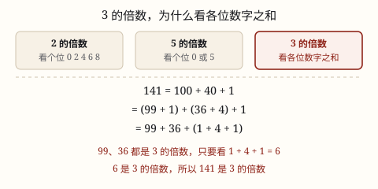

2、3、5 的倍数特征与质数、合数
2 和 5 的倍数只看个位，3 的倍数要看各位数字之和；按因数个数，自然数分成质数、合数和单独的 1。
| 所属主题 | 因数、倍数、质数、合数 |
|---|---|
| 所属模块 | 数与代数 |
| 课标学段 | 第三学段（5~6年级） |
| 前置知识 | 因数、倍数与最大公因数、最小公倍数 |
| 核心素养 | 数感推理意识 |
教材定位
人民教育出版社《2024年版》
对应五下第 1 单元「因数和倍数」：2、5 的倍数特征、奇数与偶数。；对应五下第 1 单元「因数和倍数」：质数与合数、3 的倍数特征。
课标要求
| 数与代数·数与运算 | 知道 2，3，5 的倍数的特征，了解公倍数和最小公倍数，了解公因数和最大公因数，了解奇数、偶数、质数（或素数）和合数。 印刷第 23 页 行为动词：了解 |
|---|
说明
2 的倍数：个位是 0、2、4、6、8。这样的数叫偶数，个位是 1、3、5、7、9 的数叫奇数。
5 的倍数：个位是 0 或 5。
3 的倍数：把各位上的数字加起来，和是 3 的倍数，这个数就是 3 的倍数。比如 141，1+4+1=6，6 是 3 的倍数，所以 141 是 3 的倍数。3 的倍数和个位没有关系——13 的个位是 3，却不是 3 的倍数。
按因数的个数给自然数分类：只有 1 和它本身两个因数的数叫质数（也叫素数）；除了 1 和它本身还有别的因数的数叫合数；1 只有一个因数，既不是质数也不是合数。
最小的质数是 2，它也是唯一的偶质数；最小的合数是 4。20 以内的质数是 2、3、5、7、11、13、17、19，一共 8 个。
（质数和合数）
把因数全部找出来数一数个数，非零自然数就分成清清楚楚的三类：只有 1 个因数的、正好 2 个的、3 个和 3 个以上的。
只有 1 和它本身两个因数的数，叫做质数，也叫素数，2、3、5、7、11、13、17、19 都是。除了 1 和它本身还有别的因数的数，叫做合数，4、6、8、9、10、12 都是。这是按因数个数分的，不按大小分，也不按奇偶分。
1 只有一个因数，凑不成「两个」，所以它既不是质数，也不是合数，整个自然数家族里只有这一个是这样。2 是唯一的偶质数：别的偶数都带着因数 2，是合数，所以「质数都是奇数」只差这一个例外。
判断一个数是不是质数，用 2、3、5、7…… 逐个试除，试到两个数相乘已经超过它，就可以停。判断 97：试 2、3、5、7 都不整除，而 10 × 10 = 100 已经超过 97——一对因数总是一小一大，要是真有比 10 大的因数，它的搭档一定比 10 小、早就被试过了。小的试完了，大的不用再试。
使用场景
快速判断能不能平分：114 块糖要分给 3 个小组，看一眼数字和 1+1+4=6 就知道能平分，不用真去除。
包装与装箱：商品按 2 个一盒、5 个一袋包装，看总数的末位就能知道能不能正好装完。
核对编号与密码：图书编号、快递单号里常要用到奇偶、倍数这类一眼就能看出的判断。
数学游戏：报数游戏里「报到 3 的倍数就拍手」，靠的就是这条特征；找质数的游戏则要先会试除。
（质数和合数）
排方阵：全班 41 人，除了排成一长排，怎么排都会多出人或空出位，因为 41 是质数。
分装打包：一批 91 件快递要装成每箱同样多、箱数也大于 1，能不能装整齐，就看 91 是质数还是合数。
判断能不能平均分：24 块巧克力 5 个人分不均，因为 5 不是 24 的因数；24 是合数，能分出好几种整齐的份数。
密码与安全：网上支付背后的加密方法，靠的正是「两个大质数相乘容易，把乘积拆回那两质数极难」。
注意点
3 的倍数不能看个位。个位是 3、6、9 的数不一定是 3 的倍数（13、16、19 都不是），个位是 1、4 的也可能是（21、24 都是）。只能算各位数字之和。
1 不是质数。质数的标准是「正好有两个因数」，1 只有 1 这一个因数，两个都凑不够，所以它单独站一边。
2 是质数，不是合数。虽然 2 是偶数，但它的因数只有 1 和 2 两个。
数字和可以继续加。比如四位数 2、5、7、8 相加得 22，还可以再算 2+2=4，4 不是 3 的倍数，原数也不是。
（质数和合数）
1 不是质数。它只有一个因数，不满足「两个」的条件。问「最小的质数是几」就答 1，是这一节最常见的失分。
2 是质数，也是偶数。不要因为「偶数都能被 2 整除」就把 2 划进合数。
奇数不等于质数。9、15、21、25、27 都是奇数，却都能拆成两个比 1 大的数相乘。
试到两数相乘超过它，但一个都不能漏。判断 91 时试了 2、3、5 就收手，会漏掉 7（10 × 10 = 100 > 91，还没到停的时候）；91 = 7 × 13。
先用倍数特征筛一遍。看个位能不能被 2、5 整除，看各位数字和能不能被 3 整除，剩下的再试 7、11、13。
为什么是这样

图 1：十、百、千除以 3 都余 1，剥掉能被 3 整除的部分，剩下的正好是各位数字之和
算理推导
先看 2 和 5 为什么只看个位。10 = 2 × 5，所以 10、20、30……这些整十数既是 2 的倍数，也是 5 的倍数。一个数比如 34，拆成 30 + 4：30 那部分一定能被 2 整除，能不能被 2 整除就全看剩下的 4，也就是个位。5 同理，整十数也都能被 5 整除。
3 就不一样了：10 不是 3 的倍数，10 ÷ 3 = 3 余 1。再往上，100 ÷ 3 = 33 余 1，1000 ÷ 3 = 333 余 1——每个「整十、整百、整千」除以 3 都余 1。
看 141：141 = 100 + 40 + 1。而 100 = 99 + 1，40 = 39 + 1，其中 99 和 39 都是 3 的倍数（99 = 3 × 33，39 = 3 × 13）。所以 141 = 99 + 39 + (1 + 4 + 1)。
99 和 39 这两块已经能被 3 整除，剩下的 1 + 4 + 1 = 6 正好是各位数字的和。所以 141 能不能被 3 整除，就看这 6 能不能被 3 整除。6 能，141 就能。
换成任何数都一样：每个数位上的数字先剥掉一堆能被 3 整除的部分（9、99、999……），剩下的正好是各位数字本身。这就是 3 的倍数只看各位数字之和的道理，也是它和个位无关的原因。
（质数和合数）
拿 1 到 12 每个数，把因数一对一对写出来数个数：1 只有 1 个；2 是 1、2 两个；4 是 1、2、4 三个；12 是 1、2、3、4、6、12 六个。
按个数排队，自然分成三堆：1 单独一个；2、3、5、7、11 都正好两个；4、6、8、9、10、12 都是三个以上。三堆之间没有重叠，也没有漏掉谁。
「正好两个」这一堆为什么特别？一个数至少有 1 和它本身；两者重合时只剩 1 个，不重合时正好 2 个。所以「两个」是这个家族里不能再少的门槛，卡在门槛上的数才单独有个名字。
再看「试到哪停」这条技巧。97 如果真有一个比 10 大的因数，比如 20，另一个因数就得小于 5，因为 20 × 5 = 100 已经超过 97。那个小因数一定落在 2、3、5、7 里，早就试过了。所以试到 10 × 10 超过 97 就够，不是偷懒，是刚好够。
动手实验
在百数表上把 2、3、5 的倍数涂成三种颜色。2 和 5 的倍数排成竖直的一列一列（说明只看个位就够），3 的倍数却是一斜行一斜行地走（说明个位帮不上忙）。再把没被涂掉的数圈出来——里面还混着 1 和 49、77、91 这些数，得再用 7 去试除一遍，最后剩下的才是 100 以内的质数，一共 25 个。 （质数和合数） 在方格纸上用棋子摆长方形，只允许摆成「每行几个 × 几行」的整齐阵形。7 只能摆 1 行 7 个；12 能摆 1×12、2×6、3×4 三种。把 1 到 20 全摆一遍：除了「1 行」以外没有别的摆法的是质数；能摆成「每行多于 1 个、行数也多于 1」的是合数；1 只有 1×1 一种摆法，两个方向都是 1，哪一堆都不算。
按场景的例题
例 1（场景：校园生活） 五（1）班做报数游戏，报到 3 的倍数要拍一下手。小海报的数是 87，小桐报的数是 94
谁应该拍手？
解：8 + 7 = 15，15 是 3 的倍数，所以 87 是 3 的倍数，小海要拍手。9 + 4 = 13，13 不是 3 的倍数，94 不是 3 的倍数，小桐不用拍。
答：小海拍手（87），小桐不拍（94）。
例 2（场景：饮食与配比） 班级联欢会买了 114 块巧克力，要平均分给 3 个小组
能正好分完吗？每组分多少块？
解：1 + 1 + 4 = 6，6 是 3 的倍数，所以 114 是 3 的倍数。114 ÷ 3 = 38，正好分完。
答：能正好分完，每组分 38 块。
例 3（场景：购物消费） 超市把酸奶按每排 5 杯摆进托盘，要求每排都摆满
245 杯能摆满整排吗？246 杯呢？
解：245 的个位是 5，是 5 的倍数，245 ÷ 5 = 49，能摆 49 排。246 的个位是 6，不是 0 也不是 5，不是 5 的倍数，最后一排只有 1 杯。
答：245 杯能摆满 49 排；246 杯不行，还剩 1 杯。
例 4（场景：校园生活） 数学社团在玩「找出藏在中间的合数」，抽到的数是 91
91 是质数还是合数？
解：按顺序试：91 不是偶数，2 不行；9 + 1 = 10，不是 3 的倍数；个位不是 0 或 5，5 不行；再试 7，91 ÷ 7 = 13，正好整除。说明 91 除了 1 和 91，还有因数 7 和 13。
答：91 是合数，91 = 7 × 13。
例 5（场景：校园生活） 五年级排练团体操
五年级 91 人排练团体操，要排成行数大于 1、每行人数也大于 1 的方阵，能排吗？
解：要试到两数相乘超过 91 为止，即试 2、3、5、7。91 是奇数；各位和 9+1=10，不能被 3 整除；个位不是 0 或 5；91 ÷ 7 = 13 能整除，所以 91 = 7 × 13。
答：能排，7 行每行 13 人，或 13 行每行 7 人。
例 6（场景：物流运输） 快递站分装包裹
143 件快递要装成每箱件数相同、箱数也大于 1，能装吗？
解：12 × 12 = 144 > 143，试到 11 就够：试 2、3、5、7、11。143 不是偶数；各位和 1+4+3=8；个位不是 0 或 5；143 ÷ 7 余 3；143 ÷ 11 = 13 能整除。
答：能，11 箱每箱 13 件，或 13 箱每箱 11 件。
例 7（场景：校园生活） 检验一个数是不是质数
127 是不是质数？要说出试了哪几个数、为什么只试这些。
解：12 × 12 = 144 > 127，只需试 2、3、5、7、11。127 是奇数；各位和 1+2+7=10；个位是 7；127 ÷ 7 余 1；127 ÷ 11 余 6。五个数都不整除。
答：127 是质数。
例 8（场景：绿化照明） 花坛摆花
花坛要摆 41 盆花，摆成每行盆数相同、行数大于 1 的长方形，能摆吗？
解：7 × 7 = 49 > 41，只需试 2、3、5。41 是奇数，各位和 4+1=5，个位不是 0 或 5，都不整除。41 的因数只有 1 和 41。
答：不能，41 是质数，只能摆成一长排。
常用推论
2 的倍数都是偶数；末位是 0 的数同时是 2 和 5 的倍数。
同时是 2、3、5 的倍数，个位一定是 0，并且各位数字之和是 3 的倍数（最小是 30）。
大于 2 的偶数都是合数；除了 2，所有的质数都是奇数。
100 以内的质数有 25 个，20 以内的质数是 2、3、5、7、11、13、17、19。
非零自然数按因数个数分成三类：1（1 个）、质数（正好 2 个）、合数（3 个及以上）。
20 以内的质数有 8 个：2、3、5、7、11、13、17、19；100 以内有 25 个。
除 2 以外，所有质数都是奇数；但奇数不一定是质数，9、15、21、25 都是合数。
两个都大于 1 的数相乘，积一定是合数，至少带着 1、这两个因数、积本身这几个因数。
判断一个数是不是质数，只需用 2、3、5、7…… 逐个试除，试到两个数相乘超过它还都不整除，就可以断定它是质数。
易错点
错「13 的个位是 3，所以 13 是 3 的倍数。」
为什么错把 2、5 的「看个位」经验硬套到 3 上。3 的倍数要看各位数字之和，1 + 3 = 4，4 不是 3 的倍数。
正确13 不是 3 的倍数；反过来 21 的个位是 1，但 2 + 1 = 3，21 才是 3 的倍数。
错「1 是质数，因为它只能被 1 整除。」
为什么错质数要求正好有 2 个因数（1 和它本身），1 只有 1 这一个因数，两个都算不上。
正确1 既不是质数也不是合数；最小的质数是 2。
错「91 是质数，看着分不开。」
为什么错只试了 2、3、5 就下了结论。91 的因数藏在 7 那里：7 × 13 = 91。
正确91 是合数。判断时要按 2、3、5、7、11…… 一直试到因数成对出现为止。
错「所有的偶数都是合数。」
为什么错2 是偶数，但它的因数只有 1 和 2，是质数。
正确除了 2 以外，偶数都是合数；2 是唯一的偶质数。
错「1 是最小的质数，因为 1 只能被 1 整除。」
为什么错1 的因数只有它自己，一共一个，不满足「正好两个」的条件。
正确最小的质数是 2；1 既不是质数也不是合数。
错「2 是偶数，偶数都能被 2 整除，所以 2 是合数。」
为什么错2 的因数只有 1 和 2 两个，正好符合质数的条件。偶数里只有 2 是质数。
正确2 是质数，而且是唯一的偶质数。
错判断 91：试了 2、3、5 都不整除，就判定它是质数。
为什么错试除要试到两数相乘超过 91 才能停，10 × 10 = 100 > 91，所以 7 也在试除范围内，漏试了 7。91 = 7 × 13。
正确试 2、3、5、7 四个数，7 能整除，91 是合数。
错「9、15、21 都是奇数，所以都是质数。」
为什么错质数看因数个数，不看奇偶。9 = 3 × 3、15 = 3 × 5、21 = 3 × 7，都有三个以上因数。
正确9、15、21 都是合数；奇数里既有质数（7、11），也有合数（9、15）。
直观理解
把一个数按 3 分堆，就像把一叠钱全换成「3 的倍数」的大票：10 元能换 9 元加 1 元，100 元能换 99 元加 1 元，剩下的那些零头凑起来正好是各位数字。所以判断 3 的倍数，只要看这些零头加起来是多少。 （质数和合数） 把质数想成「掰不开的积木」：7 块只能整块摆着，想分成一样多的几堆，怎么分都会余下。合数像拼好的乐高，12 能拆成 2 排 6 个、3 排 4 个。1 是一块什么都不算的零件——只有自己，拼不出形状，哪一边都不收它。
二五倍数看个位，三的倍数加一加；一不是质也不是合，最小质数就是二。 （质数和合数） 因数只有一和己，这样的数叫质数；四六八九都能拆，拆得开的叫合数。一是特例记清楚，既不是质也不合；二是唯一偶质数，试除到根就够数。